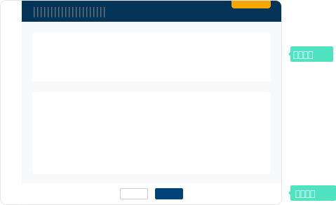
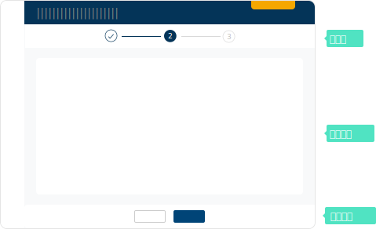

定義
新增編輯頁面是主要目的為載明細項、輸入訊息的頁面，用以確保使用者按照要求或程序輸入資訊並提交給系統，或是用以引導使用者完成設置。
規則
Header 的標題為「新增 / 編輯 XXX」，例如：「新增 SKU」、「編輯退貨單」。
類型
1. 基本框架
- 呈現所有需要填寫的訊息，適合內容項目較少，内容項無法按照相關性分類的表單。
- 使用於當需要完成一個簡單快速的任務，輸入少量資訊即可完成。

2. 分解步驟
- 將大型、複雜任務拆解為多個部分，並且按照相關性分組，減輕使用者輸入過多的負擔。即使美的部分得以單獨處理，但最終一起完成並提交。使用於大型、複雜的表單，透過適當的任務分割，可以降低使用者的出錯率。
- 詳細規範請見 Steps 步驟條。

元素
編輯、新增頁面通長由多張卡片共同組成，以下列出常見的卡片，以及其中基本應出現的資訊。
1. 資訊
- 與「基本資料」相關的卡片標題文案為「XXX 資訊」，例如：「供應商資訊」。
- 其他與基本資料無相關的卡片標題文案以簡潔為主，詞尾可能有「資訊」、「設定」、「類型」，抑或是什麼都不加。
例如：聯絡資訊、通路商品規格類型、API串接設定、付款單。 - 若為「物品」的基本資料，應遵循以下順序並包含此資訊「編號 > 名稱」。
- 若為「人員」的基本資料，應遵循以下順序並包含此資訊 「帳號 > 姓名」。
2. 編輯資訊
- 為「編輯」頁面最底部的卡片。
| 排序 | 名稱 | 格式 | 範例 |
|---|---|---|---|
| 1 | 建立時間 | YYY-MM-DD hh:mm:ss | 2022-05-31 00:01:50 |
| 2 | 建檔人員 | 帳號 + 名字 | ming.chen 陳小明 |
| 3 | 建檔人員IP | 電腦 IP 位置 | 123.12.1.1 |
| 4 | 最新異動時間 | YYY-MM-DD hh:mm:ss | 2022-05-31 00:01:50 |
| 5 | 最新異動人員 | 帳號 + 名字 | ming.chen 陳小明 |
| 6 | 最新異動人員 IP | 電腦 IP 位置 | 123.12.1.1 |
| 7 | 異動項目 | 異動時間 + 異動欄位 | 2022-05-31 00:02:50 一般 SKU 圖片 |
3. 狀態與歷程
- 通常出現於訂單模組。
- 詳細規範請參考 Steps 步驟條。